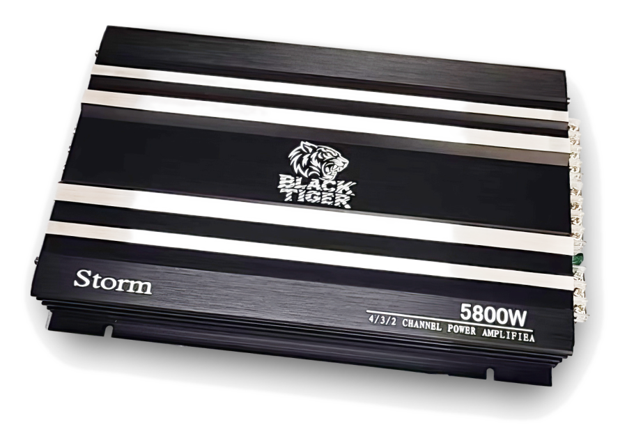

Storm 5800W
Storm 5800W
4/3/2‑канальный усилитель • универсальный для фронта/тыла и несложных систем.
RMS @ 4Ω60W × 4
RMS @ 2Ω80W × 4
Bridge @ 4Ω160W × 2
THD< 0.15%
Диапазон частот10Hz–30kHz
S/N> 90dB
Чувствительность200mV–8V
Предохранитель25A × 2
Купить Storm 5800W
- Фронт + тыл — один усилитель закрывает базовую систему.
- Громче и чище без «песка» на ВЧ при корректной настройке.
- Подходит, если нужен универсальный вариант «поставил и поехал».